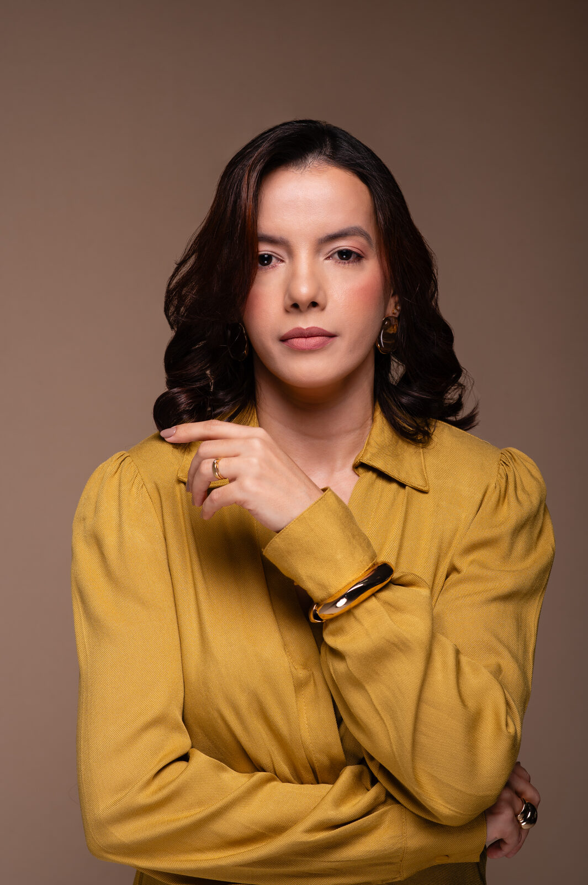
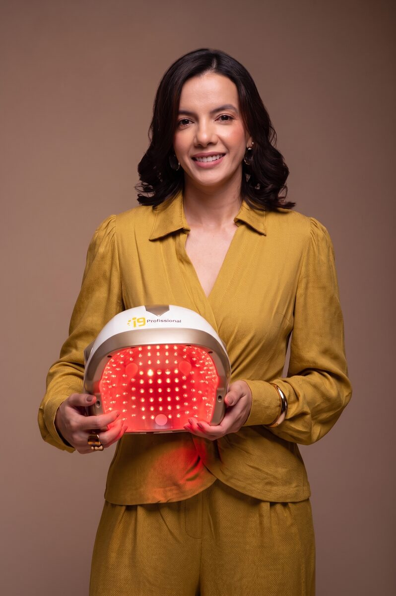

Queda dos fios
Percebeu uma mudança na quantidade de fios que caem e quer entender melhor o seu caso?
Um atendimento individualizado começa entendendo o seu caso. Avalie seu histórico, couro cabeludo e fios com uma profissional especializada em tricologia e terapia capilar.
📍 Codó-MA · Atendimento mediante agendamento

Queda e afinamento dos fios podem estar relacionados a diferentes fatores. Por isso, cada pessoa precisa ser observada de forma individualizada.
Percebeu uma mudança na quantidade de fios que caem e quer entender melhor o seu caso?
Notou redução de volume ou afinamento dos fios e deseja buscar orientação profissional?
Antes de continuar usando produtos ou suplementos por conta própria, avalie o seu caso.
O primeiro atendimento é dedicado a conhecer seu histórico, suas queixas e observar as características do couro cabeludo e dos fios.
Quero agendarMinha trajetória profissional começou há 13 anos na área da estética, atuando com design de sobrancelhas, micropigmentação, depilação e extensão de cílios.
Entre 2015 e 2016, passei a atuar no segmento de transplante capilar — experiência prática que consolidou minha paixão pela saúde dos fios e do couro cabeludo.
Graduada em Enfermagem (2023), também acumulo vivência em gestão e liderança como Enfermeira Gerente e Coordenadora de Centro Cirúrgico, com domínio em biossegurança, organização de processos e coordenação de equipes.
Buscando constante atualização científica, especializei-me em Tricologia, Terapia Capilar e Estética (Anhanguera), fiz formação presencial pela DNA Vital (Florianópolis) e pós-graduação em Ortomolecular e Terapias Integrativas e Complementares.
No consultório, meu foco é a saúde capilar avançada e individualizada. Cada paciente passa por uma avaliação criteriosa e recebe um plano de cuidado exclusivo, estruturado com base em evidências científicas.
O acompanhamento utiliza recursos modernos, como a fotobiomodulação por LED, além de protocolos personalizados. Em situações que exigem condutas de maior complexidade, a assistência conta com respaldo médico integrado, assegurando máxima precisão e segurança em todas as etapas.
Como sigo atuando na área de transplante capilar em Teresina, os atendimentos de consultório são concentrados prioritariamente na última semana de cada mês.
Meu compromisso é oferecer uma assistência acolhedora, segura e fundamentada na ciência, dedicada a quem busca saúde e vitalidade capilar.
Os procedimentos são avaliados individualmente e realizados conforme indicação profissional.

Fototerapia utilizada dentro de protocolos capilares, conforme avaliação e indicação profissional.
Protocolos capilares avançados conduzidos com rigor técnico e respaldados por retaguarda médica para avaliação e condução sistêmica integrada.
Acompanhamento individualizado conforme as necessidades observadas durante a avaliação.
Entre em contato pelo WhatsApp e escolha o melhor horário.
Durante o atendimento, será realizada anamnese e tricoscopia.
Converse sobre as características observadas e as possibilidades de cuidado.
Quando indicado, siga com um protocolo individualizado.
Converse com o Instituto Bianca Pontes e saiba como funciona a avaliação capilar com tricoscopia.
Sim. A avaliação inclui anamnese detalhada e exame de tricoscopia.
Sim. O Instituto atende homens e mulheres interessados em avaliação e cuidados capilares.
Não. As possibilidades de cuidado são avaliadas individualmente, de acordo com o histórico e as características observadas.
Quando necessário, a profissional poderá orientar ou solicitar exames dentro de sua atuação profissional.
O Instituto Bianca Pontes está localizado em Codó, Maranhão. O endereço e os horários são confirmados pelo WhatsApp no momento do agendamento.
Converse com o Instituto Bianca Pontes e agende sua avaliação capilar em Codó-MA.
Agendar pelo WhatsApp